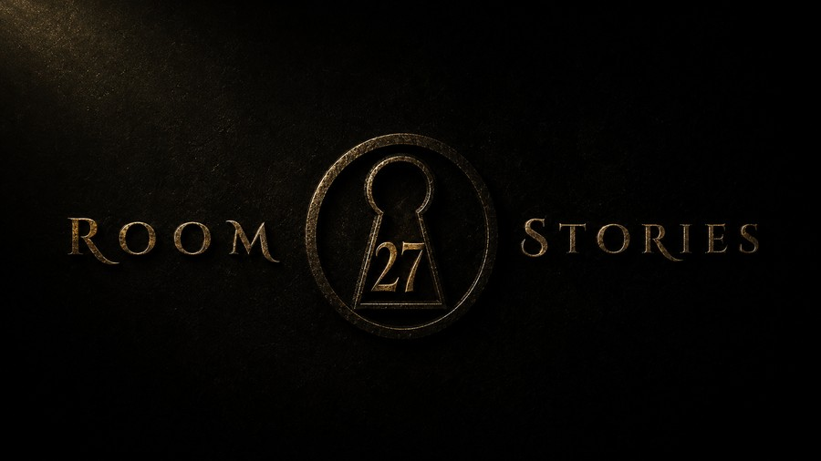

FICÇÃO SERIADA · TERROR & SUSPENSE
As Crônicas do Abismo
Chris Holloway é agente do Núcleo de Inteligência Liminar — uma divisão secreta que investiga o que não deveria existir. Nem tudo que atravessa os Portões volta inteiro.

Chris Holloway é agente do Núcleo de Inteligência Liminar — uma divisão secreta que investiga o que não deveria existir. Nem tudo que atravessa os Portões volta inteiro.


Toque direto aqui — a lista se atualiza sozinha a cada novo lançamento no Spotify.
Personagens, o Núcleo, os Portões do Inferno e os lugares por onde a história já passou — sem spoilers do que ainda está por vir.
"Evitar contato prolongado com a água." — primeira regra do Núcleo